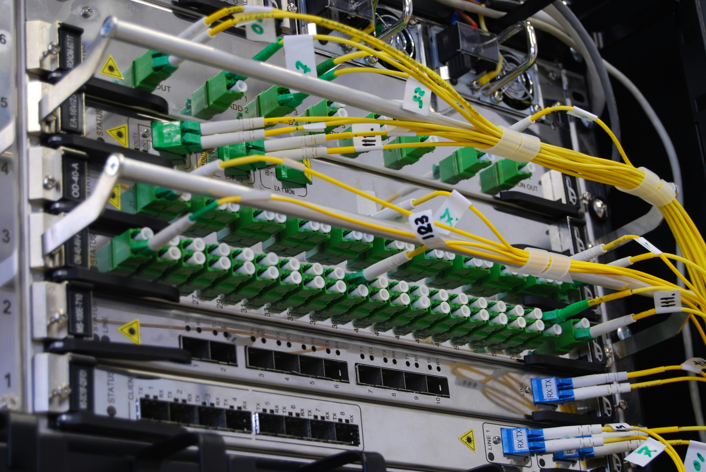

Support informatique
Dépannage, assistance utilisateurs, configuration de postes et résolution des problèmes quotidiens.
- PC, logiciels et imprimantes
- Messagerie professionnelle
- Maintenance préventive
Nous accompagnons les entreprises avec des solutions concrètes, fiables et faciles à maintenir.
Dépannage, assistance utilisateurs, configuration de postes et résolution des problèmes quotidiens.

Mise en place de solutions pour protéger vos fichiers et limiter les pertes de données.

Installation et optimisation de votre connexion réseau pour un environnement stable et sécurisé.

Installation propre et organisée de votre réseau physique.